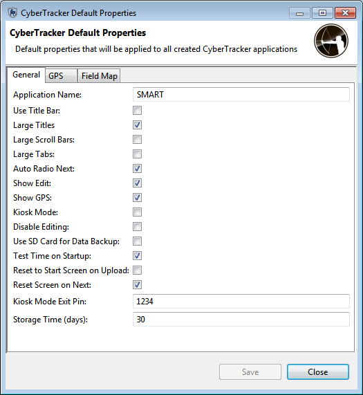
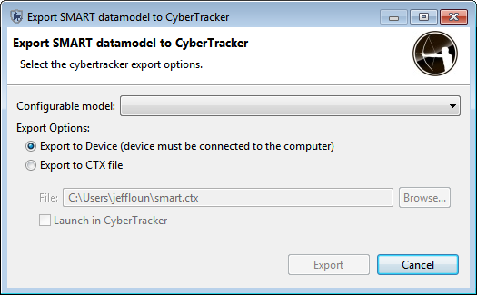
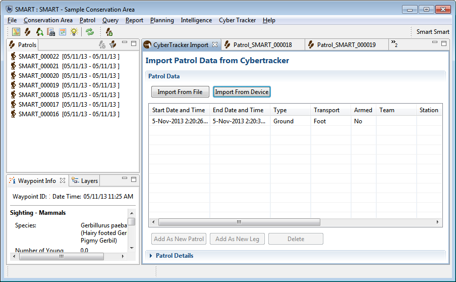

Requisitos do software:
Você deve ter o aplicativo CyberTracker Desktop instalado no seu computador para que o plug-in funcione corretamente. A versão 3.319 ou superior do CyberTracker é necessária.
A última versão estável do CyberTracker está disponível aqui: http://cybertracker.org/software/free-download
Ao selecionar no menu a opção "CyberTracker" -> "Propriedades" você verá várias propriedades que podem ser configuradas para modificar o comportamento do aplicativo móvel exportado. O "Nome do Aplicativo" é o aplicativo que será chamado no dispositivo móvel. Note que a exportação de um aplicativo com o mesmo nome mais de uma vez substituirá todos os aplicativos de coleta de dados existentes do CyberTracker no dispositivo com o mesmo nome.
Passe o mouse sobre qualquer nome de propriedade ou campo para obter uma descrição mais detalhada de como isso afetará o aplicativo de saída.

Ao selecionar no menu a opção "CyberTracker" -> "Configuração de Telas de Patrulha", você poderá personalizar as telas de coleta de metadados que são mostradas no aplicativo móvel no início de cada patrulha. As 11 telas de coleta de metadados são mostradas à esquerda da tela; selecione qual você gostaria de editar e encontre os detalhes relevantes no lado direito.
Desmarque a opção "Página Visível" para desativar a exibição da página para os usuários da coleta de dados em qualquer página que você deseje excluir. Se quiser, você também pode selecionar um valor padrão para definir essa opção para todas as patrulhas. Por exemplo, em "Tipo de Patrulha" você pode desmarcar "Página Visível" e então selecionar "Solo”. Depois que o aplicativo for exportado e os dados forem coletados e enviados de volta ao banco de dados, todas as patrulhas desse dispositivo terão o tipo de patrulha definido como "Solo".
Para exportar seu aplicativo de coleta de dados para um dispositivo móvel:

Para importar dados de volta para o banco de dados de um dispositivo móvel, execute o SMART, conecte o dispositivo móvel ao computador, faça login no CA e faça o seguinte:

O modelo de dados atual foi projetado para a flexibilidade da análise de dados e não para a eficiência de entrada de dados do usuário no campo. Por exemplo, o modelo de dados padrão tem uma variedade de categorias de nível superior (Animais, Características, Pessoas) que os usuários de entrada de dados de campo nem sempre desejam selecionar cada vez que fazem uma observação. Para melhorar a eficiência da entrada de dados, esse documento fornece uma gama de opções para permitir que os usuários configurem a entrada de dados com o objetivo de torná-la mais eficiente.
As opções abaixo são cruciais para o sucesso da integração do SMART CyberTracker, pois permitem que o modelo de dados SMART seja implantado de maneira rápida e fácil com o CyberTracker de uma maneira que aproveite a riqueza e a facilidade de uso que os usuários do CyberTracker já esperam.
Uma instalação inicial do CyberTracker em um PDA requer um modelo de dados que o acompanhe. Ao invés de usar um modelo de dados pré-configurado para a instalação, você criará um neste módulo que fará parte da instalação inicial.
Editando um Modelo de Dados Configurável
Editar Modelo de Dados Configuráveis não afeta o modelo de dados da Área de Conservação. As edições personalizadas só serão refletidas ao usar o CyberTracker para coletar observações.
Edições de modelos de dados configuráveis opcionais